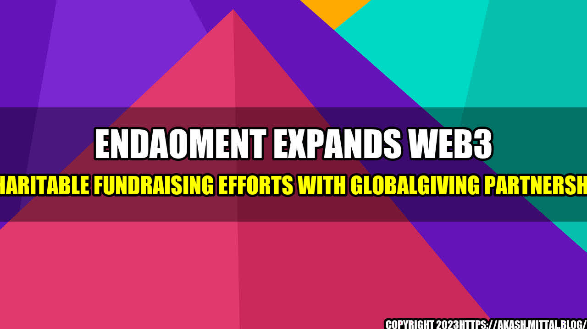

Endaoment Expands Web3 Charitable Fundraising Efforts With GlobalGiving Partnership

When it comes to charitable giving, the landscape is changing. With advances in technology, society is no longer limited by geography or borders when it comes to supporting valuable causes and making a difference in the world. The recent partnership between Endaoment and GlobalGiving is a testament to this shift, as they look to expand and enhance the impact of charitable fundraising efforts through the power of Web3 technology.
The Story Behind the Partnership
Endaoment is a Seattle-based non-profit organization that empowers individuals and organizations to create and manage their own donor-advised funds (DAFs) on the Ethereum blockchain. This allows for greater transparency, flexibility, and control over charitable giving, as well as the potential for greater efficiency and lower fees compared to traditional DAF providers.
GlobalGiving, on the other hand, is a global crowdfunding platform that connects donors with grassroots organizations and international charities. With a focus on transparency and efficiency, GlobalGiving has raised over $550 million for more than 27,000 projects around the world.
With their shared commitment to innovation and social impact, Endaoment and GlobalGiving saw an opportunity to collaborate and extend the benefits of Web3 technology to the world of charitable giving.
The Quantifiable Impact of Web3 Charitable Fundraising
The potential impact of Web3 technology on charitable fundraising is significant. By leveraging blockchain and smart contracts, donors can enjoy greater transparency and control over their donations, while charities can benefit from lower fees, faster transactions, and enhanced security.
Some of the key benefits of Web3 charitable fundraising include:
- Transparency: Blockchain technology allows for greater transparency and accountability, enabling donors to track the flow of their funds and ensure that they are being used as intended.
- Lower Fees: Traditional DAF providers and fundraising platforms can charge high fees for their services, which can reduce the amount of money that actually reaches the intended beneficiaries. Web3 technology can significantly reduce these fees, allowing for more efficient and cost-effective fundraising.
- Speed: Smart contracts can automate many of the processes involved in fundraising, including the distribution of funds, which can eliminate the need for middlemen and speed up the process for donors and charities alike.
- Security: Blockchain technology provides a high level of security and immutability, which can help prevent fraud and ensure that donations are used as intended.
The Impact of the Endaoment-GlobalGiving Partnership
The partnership between Endaoment and GlobalGiving is aimed at extending the benefits of Web3 technology to the world of charitable fundraising. Specifically, the partnership will focus on the following areas:
- Providing Greater Flexibility: Donors will be able to use their Endaoment DAFs to invest in GlobalGiving projects and support organizations working to make a difference around the world.
- Increasing Transparency: The partnership will enable greater transparency and accountability in charitable giving, allowing donors to track the flow of their funds and ensure that they are being used as intended.
- Empowering More Charities: By leveraging Web3 technology and blockchain, the partnership can reduce the barriers to entry for charities and increase the efficiency and reach of their fundraising efforts.
The overall impact of this partnership is still to be seen, but it represents an exciting step forward in the evolution of charitable giving. By combining the power of Web3 technology with the passion and generosity of donors and charities around the world, we can work together to create a better future for all.
Conclusion
The partnership between Endaoment and GlobalGiving represents an important step forward in the world of charitable fundraising. By leveraging the benefits of Web3 technology, we can create a more transparent, efficient, and impactful system for supporting valuable causes and making a difference in the world.
Some of the key takeaways from this partnership include:
- Web3 technology can significantly enhance the impact of charitable fundraising efforts by providing greater transparency, efficiency, and flexibility.
- The partnership between Endaoment and GlobalGiving represents an exciting opportunity to extend the benefits of Web3 technology to the world of charitable giving, empowering donors and charities alike.
- With ongoing innovation and collaboration, we can continue to explore new ways to use technology and digital currencies to create a better future for all.
References and Keywords
- Endaoment
- GlobalGiving
- Blockchain Technology
- Web3 Technology
- Charitable Fundraising
- Ethereum Blockchain
Hashtags and Categories
- #Endaoment
- #GlobalGiving
- #Web3CharitableFundraising
- #BlockchainTechnology
- #CharitableGiving
- #DigitalCurrency
- #Philanthropy
- #SocialImpact
- #Technology
- Category: Charitable Giving
Curated by Team Akash.Mittal.Blog
Share on Twitter Share on LinkedIn